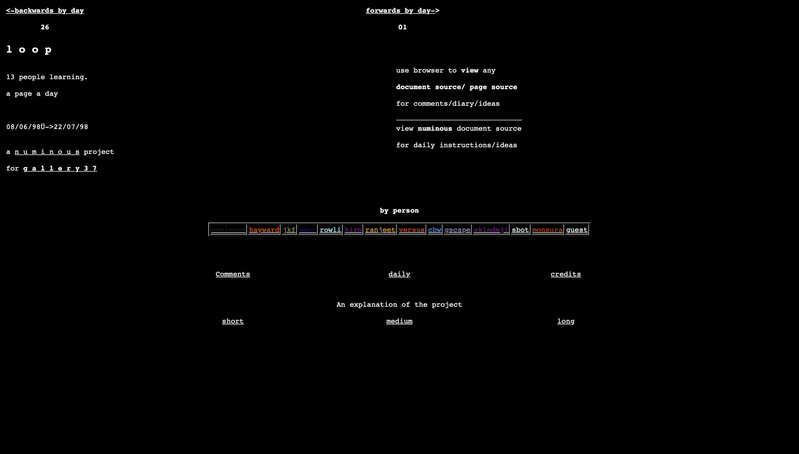

Resolved in Fragmentation
Curated by Ayobami Adegbite
This exhibition examines the paradox of artworks that are both unfinished and complete,
exploring how incompleteness becomes an integral part of their final form. Joan Heemskerk
and Dirk Paesmans, as Jodi, created fragmented, glitchy interfaces in the mid-1990s that
disrupt user expectations, turning digital errors into a finished artistic experience. Pete
Gomes' Loop (1998) is a collaborative web project that embraced perpetual evolution,
where each participant’s contribution added to a continually unfinished yet cohesive whole.
Déclin Séquence exemplifies this theme with its 31 individually styled
<time> elements, representing each day of October 2020, where the interplay
between daily updates and the slider’s browsing options blurs the line between process and completion.
These works challenge traditional notions of artistic finality.
Jodi

Year: Mid-1990s
Artist: Joan Heemskerk and Dirk Paesmans
Description: Jodi, pioneers of Web art in the mid-1990s, disrupted digital systems by subverting interfaces, commands, and code to challenge the relationship between technology and its users.
Learn More
Loop
Year: 1998
Artist: Pete Gomes
Description: Loop was a collaborative web project from 1998, where 13 participants created a daily webpage over six weeks, evolving from basic HTML to complex designs as a collective sketchbook and learning resource.
Learn More
Déclin Séquence

Year: 2020
Artist: Raphaël Bastide
Description: Déclin Séquence represents the passage of time using <time> elements to explore the tension between daily updates and the permanence of digital mediums.
Learn More